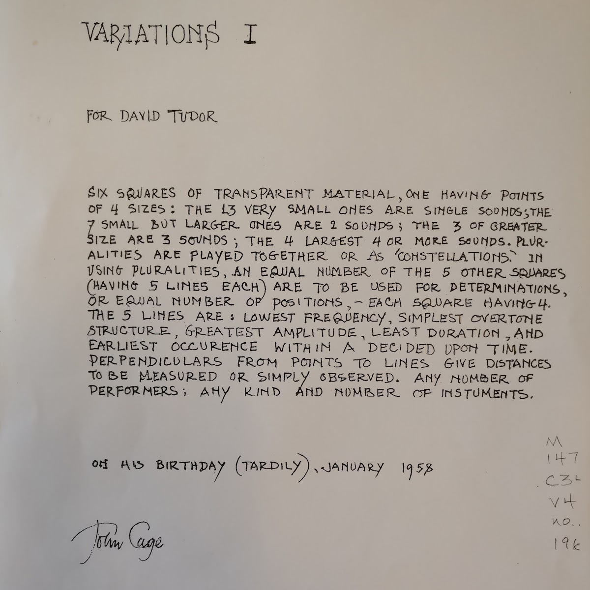
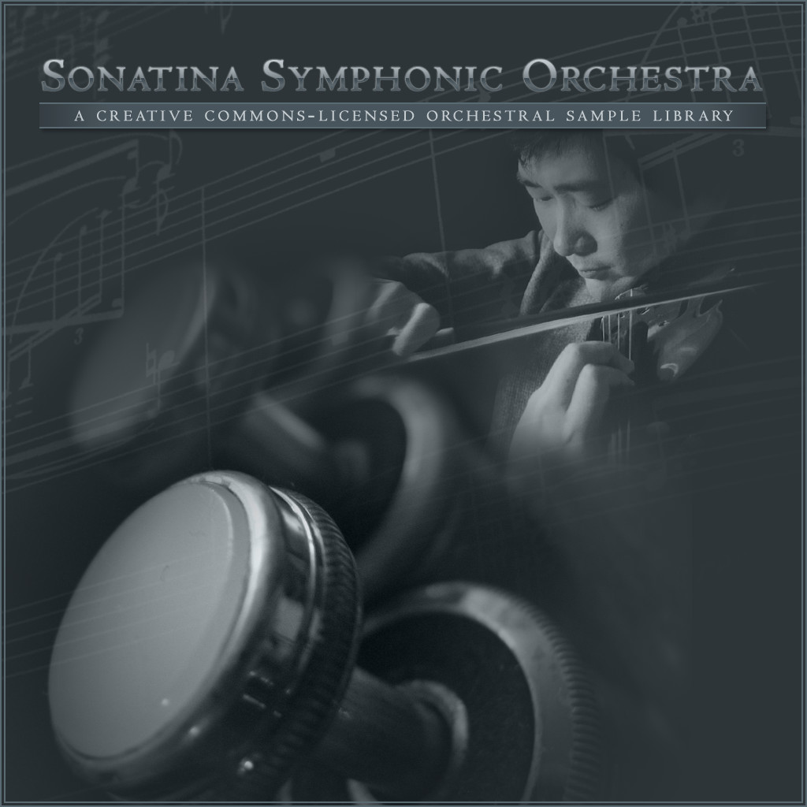
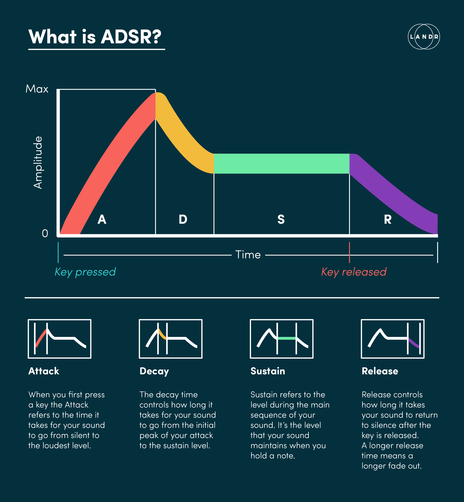
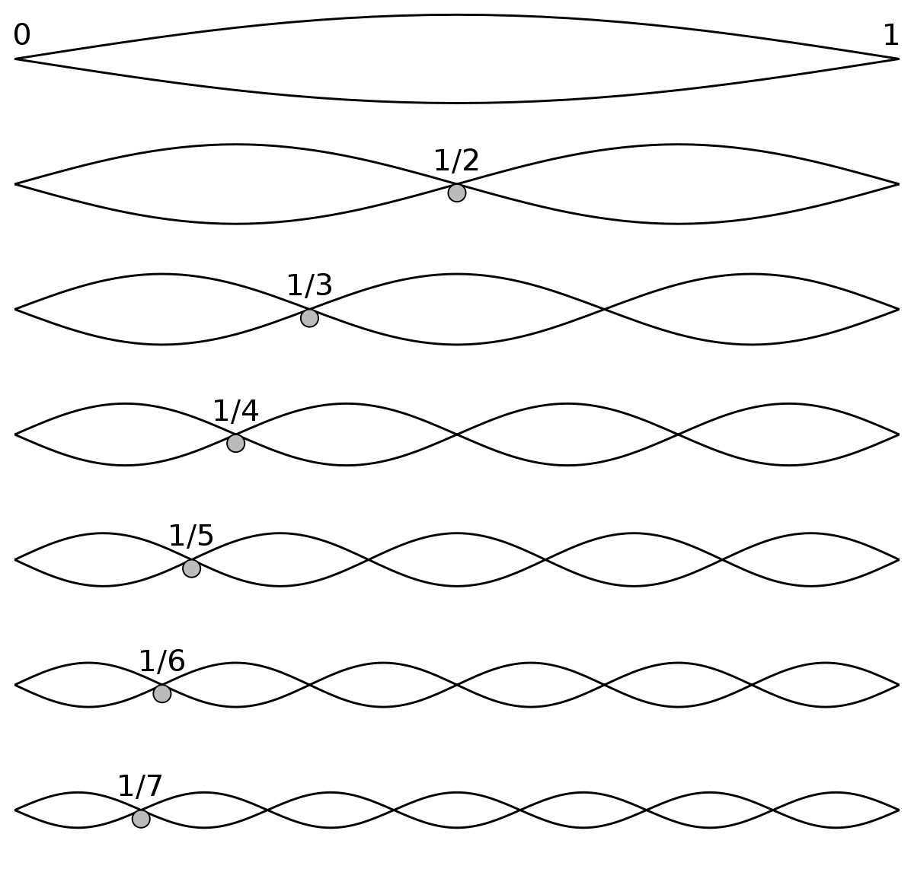
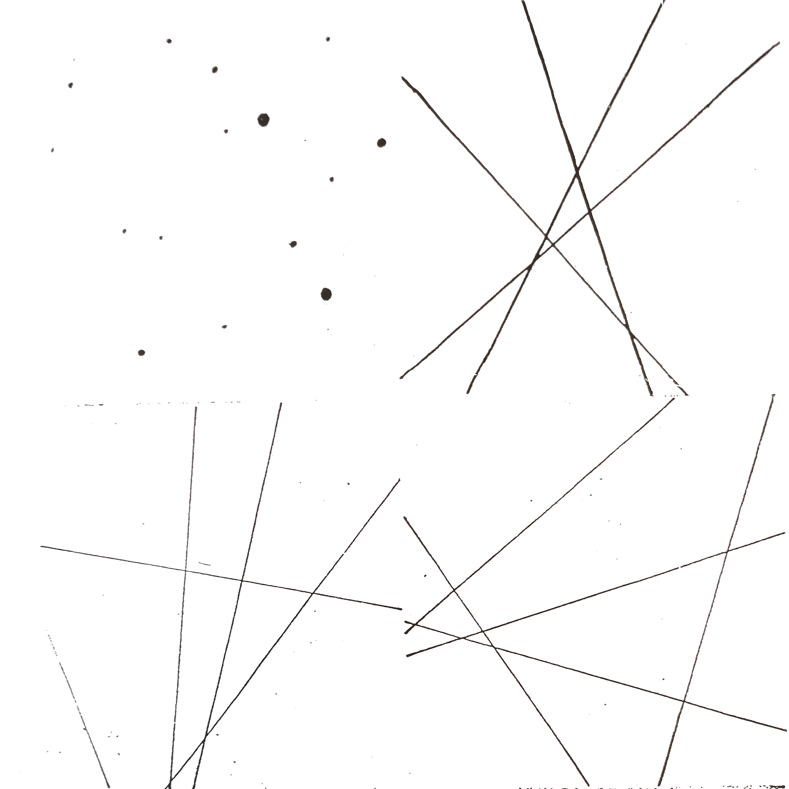
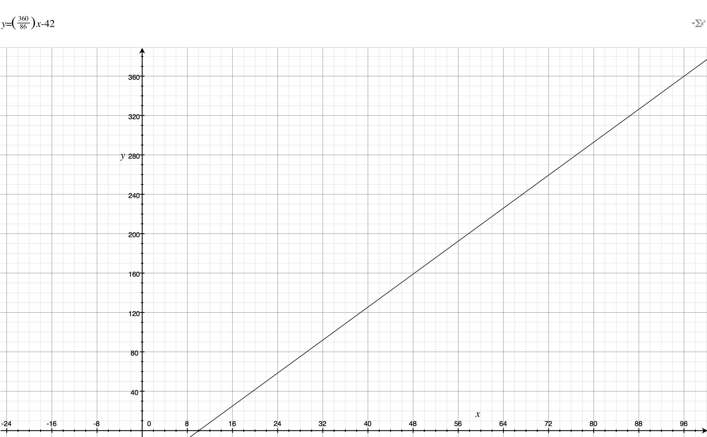
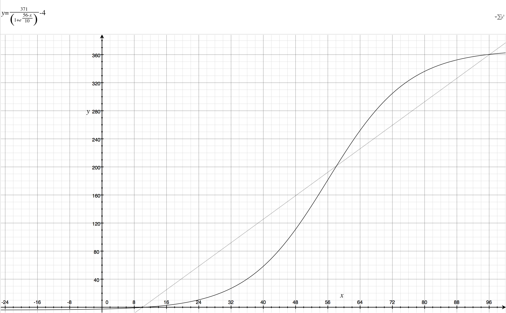

document.getElementById(info).innerHTML = "Now playing";
setTimeout(() => {
document.getElementById(info).innerHTML =
"Thank you for listening.";
},
(4 * 60 + 33) * 1000
)

exports.samples = {
'1st Violins': [
{pitch: 'A#', octave: 3, file: 'Samples/1st Violins/1st-violins-sus-a%233.wav'},
{pitch: 'A#', octave: 4, file: 'Samples/1st Violins/1st-violins-sus-a%234.wav'},
//...
{pitch: 'G', octave: 5, file: 'Samples/1st Violins/1st-violins-sus-g5.wav'},
{pitch: 'G', octave: 6, file: 'Samples/1st Violins/1st-violins-sus-g6.wav'}
],
'2nd Violins': [
{pitch: 'A#', octave: 3, file: 'Samples/2nd Violins/2nd-violins-sus-a%233.wav'},
//...
{pitch: 'G', octave: 6, file: 'Samples/2nd Violins/2nd-violins-sus-g6.wav'}
],
'Alto Flute': [
{pitch: 'A#', octave: 3, file: 'Samples/Alto Flute/alto_flute-a%233.wav'},
//...
],
'Bass Clarinet': [
{pitch: 'B', octave: 2, file: 'Samples/Bass Clarinet/bass_clarinet-b2.wav'},
//...
],
//etc.
}
$ cd Samples/Cello
$ ls
cello-a2.wav cello-c2.wav cello-d#2.wav cello-f#2.wav
cello-a3.wav cello-c3.wav cello-d#3.wav cello-f#3.wav
cello-a4.wav cello-c4.wav cello-d#4.wav cello-f#4.wav
cello-a5.wav cello-c5.wav cello-d#5.wav cello-f#5.wav
One octave change:
2 ✕ frequency = 2 ✕ speed
So m octave changes:
2m ✕ speed
There are 12 equal-spaced notes per octave, so to move by n notes:
2n/12 ✕ speed
const OCTAVE = ['C','C#','D','D#','E','F','F#','G','G#','A','A#','B'];
function noteToValue(note) {
return note.octave * 12 + OCTAVE.indexOf(note.pitch);
}
function getNoteDistance(note1, note2) {
return noteToValue(note1) - noteToValue(note2);
}
function getPlaybackRate(noteDistance) {
return Math.pow(2, noteDistance / 12);
}
function preloadNote(p5,instrument,note) {
const nearestSample = getNearestSample(instrument,note);
const noteDistance = getNoteDistance(note,nearestSample);
note.pitchAdjust = getPlaybackRate(noteDistance);
note.sample = p5.loadSound(nearestSample.file, () => {
setupNote(note)
});
}
function setupNote(note) {
const env = new P5.Env();
//env.setADSR(attackTime, decayTime, susPercent, releaseTime);
env.setADSR(0.001, 0.2, note.amplitude, note.duration);
//setRange(attackLevel,releaseLevel)
env.setRange(note.amplitude, 0);
note.sample.amp(env);
}

function playNote(note,delay) {
note.sample.play(delay,note.pitchAdjust);
note.envelope.play(note.sample);
}

function setup() {
}
function draw() {
ellipse(50, 50, 80, 80);
}
function sketch(p5) {
p5.setup = () => {}
p5.draw = () => {
p5.ellipse(50, 50, 80, 80);
}
}
new p5(sketch);
p5.fill(r,g,b,[alpha]);
p5.fill(#abcdef,[alpha]);
p5.stroke('chartreuse');
p5.colorMode(p5.HSB);
p5.stroke(h,s,b,[alpha]);
p5.noFill();
p5.noStroke();
p5.ellipse(x,y,w,[h]);
p5.rect(x,y,w,h);
p5.line(x1,y1,x2,y2);
p5.triangle(x1,y1,x2,y2,x3,y3);
function sketch(p5) {
p5.draw = () => {
p5.stroke('black').noFill();
p5.ellipse(25,25,40,30);
p5.fill('lightblue');
p5.rect(10,20,25,20);
p5.stroke('red');
p5.line(5,10,40,45);
}
}
new p5(sketch);
p5.keyPressed = () => {
//do something
}
p5.mouseClicked = () => {
//do something
}
function sketch(p5) {
let hue = 0;
p5.setup = () => {p5.colorMode(p5.HSB);}
p5.draw = () => {
p5.fill(hue, 100, 100);
p5.rect(10, 10, 80, 80);
}
p5.mouseClicked = () => {
hue = p5.random() * 360;
}
}
new p5(sketch);
p5.draw() is a loop!function sketch(p5) {
let x = 0, y = 0;
p5.setup = () => {p5.colorMode(p5.HSB)}
p5.draw = () => {
p5.background(255);
x += 1.11;
y += 1;
p5.fill(x % 360,100,100);
p5.ellipse(x % 100,y % 100,20);
}
}
new p5(sketch);

let instruments = utils.shuffle(Object.keys(library.samples));
const pointSheet = {};
pointSheet[instruments[0]] = {point: {x:86.76,y:45.68,size:1}};
pointSheet[instruments[1]] = {point: {x:57.35,y:84.29,size:1}};
//...
pointSheet[instruments[13]] = {point: {x:84.97,y:76.45,size:4}};
pointSheet[instruments[14]] = {point: {x:68.88,y:29.55,size:4}};
const lineSheets = [
[
[{x:0,y:37.23},{x:100,y:51.53}],
[{x:43.06,y:0},{x:37.75,y:100}],
[{x:66.34,y:0},{x:44.27,y:100}],
[{x:100,y:17.62},{x:36.40,y:100}],
[{x:20.62,y:100},{x:0,y:55.72}]
],[
[{x:71.43,y:0},{x:0,y:56.87}],
[{x:0,y:29.18},{x:45.75,y:100}],
[{x:0,y:54.32},{x:100,y:86.49}],
[{x:0,y:63.56},{x:100,y:35.00}],
[{x:97.84,y:0},{x:65.39,y:100}]
],
//etc.
function getAttributeLines(point,sheet) {
utils.shuffle(sheet);
return {
lowestFreq: getLineDetails(point,sheet[0]),
overtone: getLineDetails(point,sheet[1]),
amplitude: getLineDetails(point,sheet[2]),
duration: getLineDetails(point,sheet[3]),
occurence: getLineDetails(point,sheet[4])
};
}
function getLineDetails(point,lineEnds) {
const [end1,end2] = lineEnds.slice();
const line = geom.getLine(end1,end2);
return {
end1,
end2,
distance: geom.distanceFrom(point,line),
intersection: geom.perpindicularIntersectionPoint(point,line)
};
}
//returned object forms the basis of the `note`
function getNoteAttributes(instrument,point,sheet) {
const lines = getAttributeLines(point,sheet);
const [low,high] = audioUtils.getSampleRange(instrument);
const noteVal =
low + (high - low) * lines.lowestFreq.distance / 100;
const lowestFreq = audioUtils.valueToNote(noteVal);
return {
lines, //contains geometric info; other properties contain all the note info
pitch: lowestFreq.pitch,
octave: lowestFreq.octave,
delay: lines.occurence.distance,
amplitude: lines.amplitude.distance / 100,
duration: lines.duration.distance / 10
};
}
p5.draw = () => {
p5.background(colors.background);
let delay = 0;
Object.keys(score).forEach(inst => {
const point = score[inst].point;
p5.strokeWeight(point.size * 4);
//draw a circle for the instrument:
p5.ellipse(normalize(point.x),normalize(point.y),point.size * 4);
score[instrument].notes.forEach(note => {
//draw the colored lines to visualize the note:
drawNote(instrument,note);
//draw the attribute lines:
drawAttributeLines(note);
//play the note:
audio.playNote(note,delay);
delay += note.duration;
});
}
});
function setupNote(note) {
const env = new P5.Env();
//env.setADSR(attackTime, decayTime, susPercent, releaseTime);
env.setADSR(0.001, 0.2, note.amplitude, note.duration);
//setRange(attackLevel,releaseLevel)
env.setRange(note.amplitude, 0);
note.sample.amp(env);
//an addition:
const amp = new P5.Amplitude();
amp.setInput(note.sample);
note.curAmplitude = amp;
}
function drawNote(instrument,note) {
Object.keys(note.lines).forEach(noteAttribute => {
//vary the weight based on the sample's amplitude
p5.strokeWeight(note.curAmplitude.getLevel() * 100);
//color it accordint to its pitch
p5.stroke(getNoteHueValue(note),100,100,note.amplitude);
drawLine(score[instrument].point,note.lines[noteAttribute].intersection);
});
}
function getNoteHueValue(note) {
return 371 / (1 + Math.pow(Math.E,(56 - audioUtils.noteToValue(note)) / 10)) - 4;
}


function drawLiveScore() {
Object.keys(score).forEach(instrument => {
score[instrument].notes.forEach(note => {
if (note.isActive) {
drawNote(instrument,note);
}
});
});
}
function getPhrase(instrument,note,pattern) {
return new P5.Phrase(
instrument + note.pitch + note.octave
(time,rate) => {
playNote(note,time,rate);
},
pattern
);
}
function playScore(p5,score) {
const playPart = new P5.Part(16);
playPart.loop().setBPM(10);
Object.keys(score).forEach(instrument => {
score[instrument].notes.forEach(note => {
setTimeout(() => {
playPart.addPhrase(getPhrase(instrument,note,getPattern()));
}, note.delay * 1000
);
});
});
playPart.start();
}
const zeroPattern = [0,0,0,0,0,0,0,0,0,0,0,0,0,0,0,0];
let noteOffset = 0;
function getPattern() {
const pattern = zeroPattern.slice();
pattern[noteOffset++ % 16] = 1;
}